Case study 02 · Mobile app
Faster help, trusted information. A safety app for India's everyday emergencies.
In 30 seconds
- The problem: When something dangerous happens in India, most people have no fast, reliable way to report it, warn others or get help.
- What I did: Designed the full app as the only designer. Six modules: incident reporting, safety feed, SOS, map, AI legal advisor and profile.
- The result: Production-ready designs, built and tested across 8 internal releases. The company closed before the public launch.
The starting point
When something dangerous happens nearby in India, most people call someone. They post on WhatsApp. They hope someone sees it. There is no fast, central place to report what is happening, get help or find information you can trust.
Citizen App was built to change that: a hyperlocal safety platform where people report incidents in real time, trigger SOS alerts and stay informed with verified local news. I was the sole UX designer. Requirements and initial research came from the Head of AI. My job was to turn them into a clear, usable, trustworthy experience, working closely with the AI team, the mobile developers and the stakeholders.
Module 1: reporting an incident
The hard part: the person filling this form is stressed, scared or in danger. My first version put everything on one long screen. The team flagged it immediately, and they were right. To a person who just witnessed an accident, a long form is not a tool. It is an obstacle.
So I broke it into steps, one question per screen. What happened? How urgent is it? Add details. Review. Submit. Each screen asks one thing a stressed person can actually answer.
- Plain location names instead of GPS numbers. The first version showed raw coordinates. Meaningless in an emergency. I worked with the developers to show the neighbourhood name instead, so users can confirm their location instantly.
- Voice input on text fields. Typing is slow when you are stressed. Speaking is not.
- A reward that waits its turn. A Community Hero badge appears after submitting, never during. Mid-form it would be a distraction. After, it feels earned.
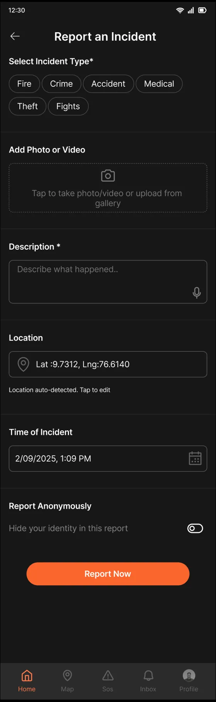
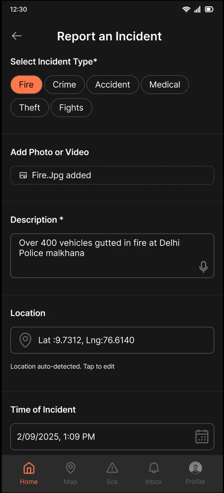
Module 2: a feed you can trust
The feed mixes citizen reports with verified news. My first instinct was to separate them into tabs, because they carry different levels of trust. I designed it that way twice. Then the investor pushed back and asked for one mixed feed. That was a real business constraint, and the direction changed.
But the trust problem did not go away just because the tabs did. So I moved the trust signal onto every card instead. Each post carries a badge showing exactly where it stands: under review, verified, approved or not approved. Once the AI confirms a report, the badge updates on its own. Users always know what they are reading.
When I could not control the structure, I controlled the signals.
Honestly, the badge system solved the problem better than the tabs would have. It was appreciated by stakeholders, and it kept the feed dense without making it misleading.
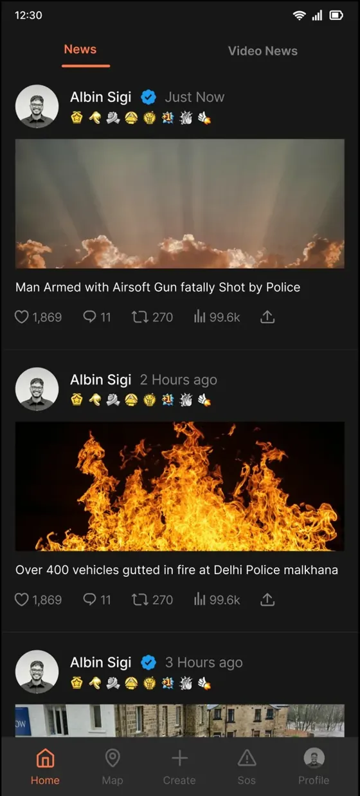
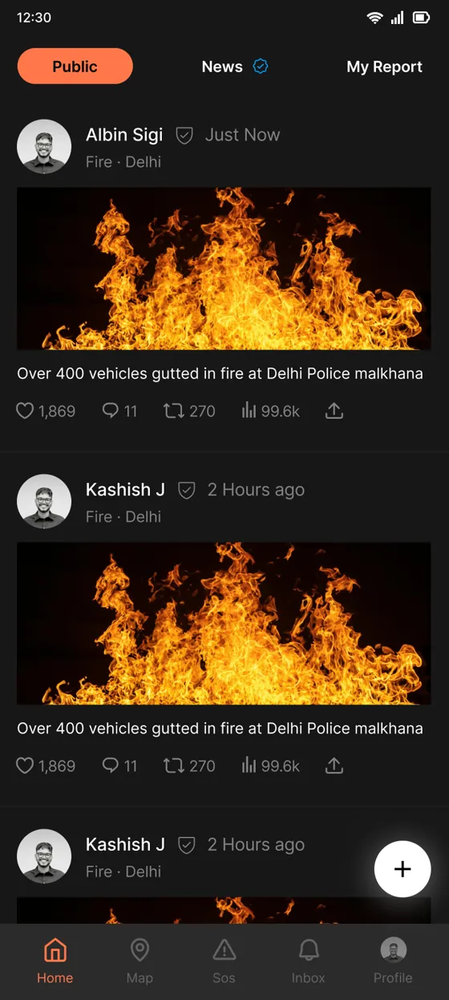
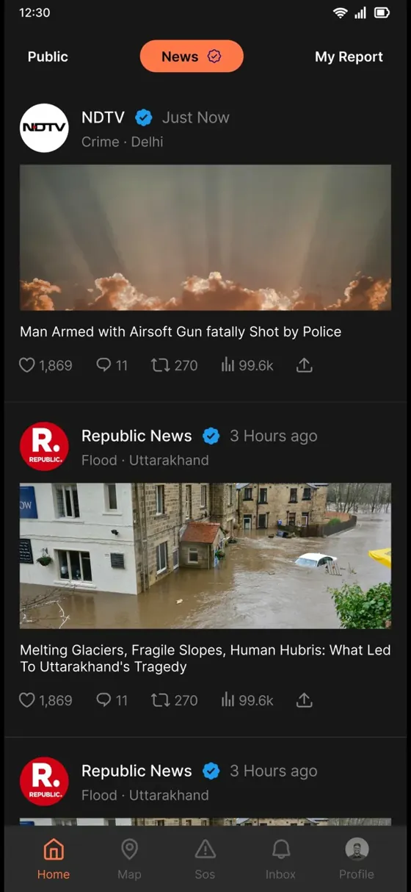
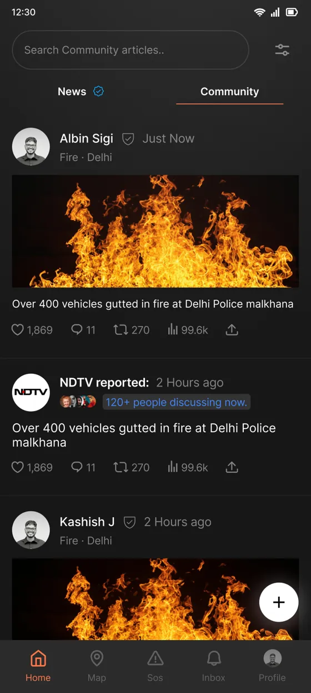
Module 3: SOS, the highest-stakes flow in the app
A person triggering SOS may be panicking, injured or in danger. Every extra tap and every unclear label has a cost. The first version had a plain SOS button. One tap, alert sent. The gap: a medical emergency and a fire need different responders, and a generic alert gives them nothing to act on. But adding an extra screen to pick the type felt wrong too.
The answer was to put the emergency type inside the gesture itself. Swipe up for a medical emergency. Swipe down for anything else. Zero extra screens, zero extra taps, and the responder still gets the context they need.
- Real people, not a spinner. During the countdown, contact avatars appear one by one as each person is notified. Seeing Mum and Dad appear tells you real help is being reached.
- A visible cancel button. False alarms need an instant exit. Knowing you can cancel makes people more willing to use SOS when it is real.
- Details are optional. A person in danger may not be able to type. The alert works without any follow-up. If they can add details, the questions adapt to the emergency type.
- Cancel and resolve live in different moments. Testing showed that putting them on the same screen risked a panicked wrong tap. Cancel is available during the countdown. Mark as Resolved appears later, when the user reopens the app and is calmer.
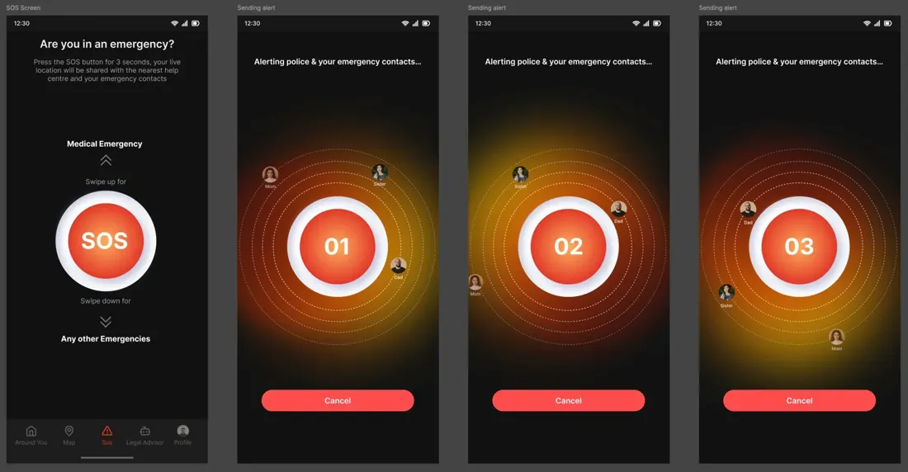
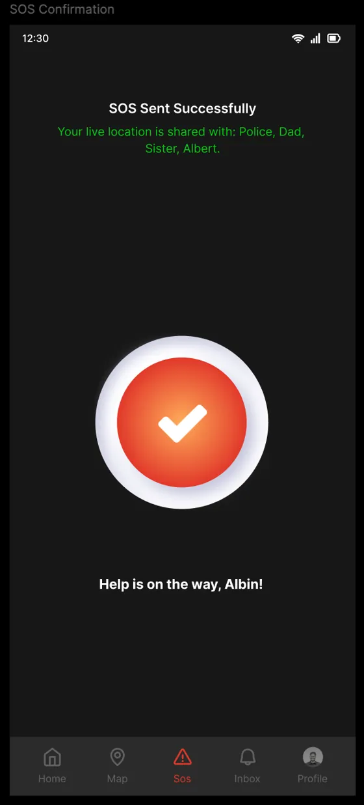
Module 4: the map, and the feature I proposed myself
A safety map has to answer two different questions. What is happening right now? And which areas are dangerous over time? One dropdown switches between the two: an incident view with markers for live events, and a hotspot layer that turns the map into a heat map of the last three months. Tapping a hotspot shows an AI summary in plain language: "45 incidents in 3 months: 20 accidents, 15 fires, 10 floods." Insight, not just data.
The bigger idea came from watching how people actually think about safety in India. It is rarely just personal. A mother worries about her daughter's commute. A husband checks if his wife reached home. I proposed putting family members on the same map as the incidents, so you see where your people are and what is happening around them in one view. That proposal reframed the app from a personal safety tool into a family safety platform.
- Consent comes first. Nobody's location is shared without their approval, ever.
- Four sharing modes. Critical alerts only, periodic updates, real-time tracking, or on-demand with per-request approval. Real families need that range.
- No confusion on a dense map. Family avatars pulse with a blue outline so they never get mistaken for incident markers.
The Family Safety Network was fully designed and prototyped, then cut from the first release for time. It remains ready for a future version.
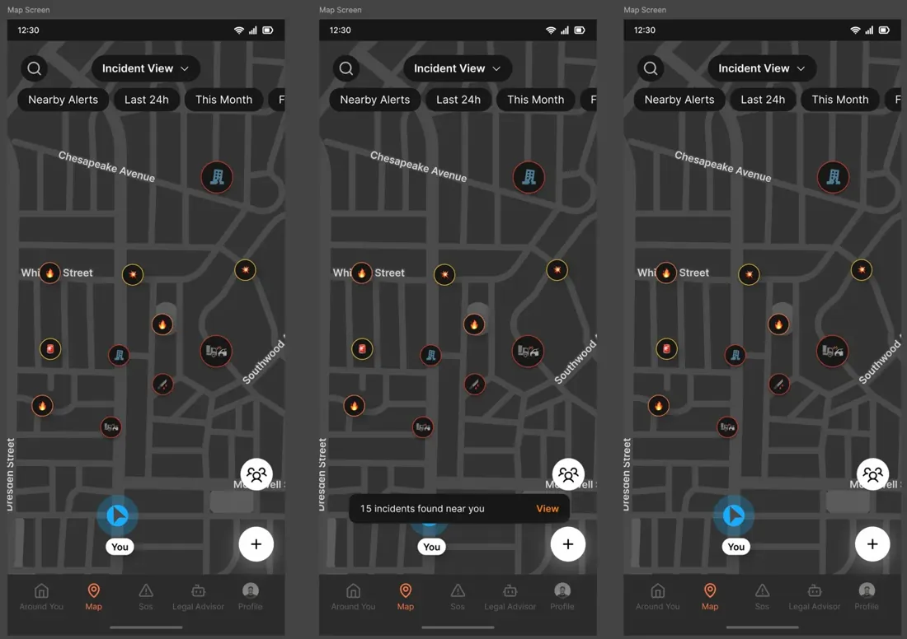
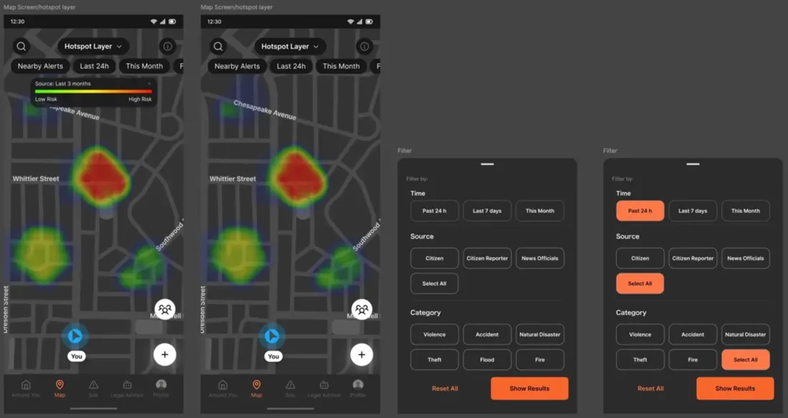
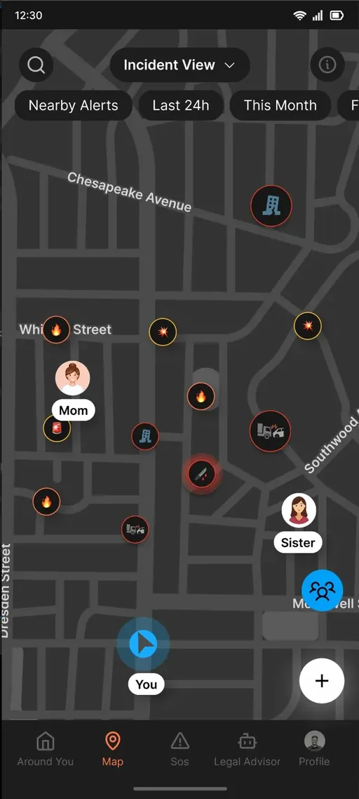
Module 5: an AI legal advisor for people who never had one
Most people in India do not know their basic rights. What can a police officer ask of you? What documents must you carry? The feature had to make legal help feel possible for someone who has never spoken to a lawyer and would not know how to start.
An empty chat box is intimidating, so the screen opens with topic chips: Traffic Rules, Police and Arrest Rights, Women's Rights, Cyber Fraud, Workplace Rights, Consumer Rights. Tap one and the conversation starts. The voice mode shows an example before you speak: "Say something like: What are my rights if police stop me?" That one line teaches people how to ask.
- Answers you can keep. Every response has a copy button, because legal information often needs to be shown or shared during a real encounter.
- History you can return to. Past conversations are saved, so users can find an answer again without re-asking.
- Honest limits. Testing showed the AI giving generic answers, so it was constrained to Indian law only. Out-of-scope questions get a clear redirect instead of a made-up answer.
Module 6: a profile that closes the loop
Most profile pages are settings pages in disguise. This one tracks outcomes. Every report a user submits goes through verification, and My Reports shows exactly where each one stands, with a notification badge when something changes. Badges show what you did and when, and unearned ones show a progress bar toward unlocking them. Contribution you can see, not just a points total.
The result
- Production-ready designs across all six modules, handed off to the development team.
- Built and tested internally across 8 releases, with structured team feedback each round.
- The app never reached the Play Store. The company shut down before launch. Not launching is different from failing, and this work was designed, built and tested.
What I learned
The honest lesson: a good design decision, backed by data and logic, can still be overruled by seniority. The feed tabs were the right call and they still got cut. The skill is not only making the right decision. It is finding a way to serve users inside the constraints you are given. The badge system was my answer to that.
The SOS module taught me how to design for panic: not what users need, but what they are capable of doing under extreme stress. I will carry that into every project.